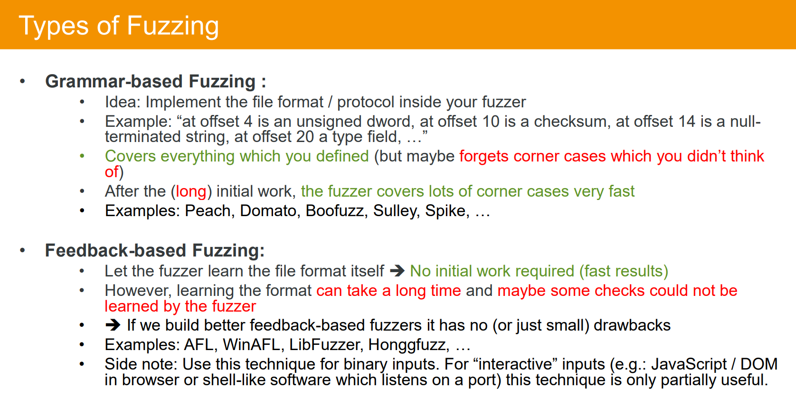

每周学习笔记2022-8月
每周学习，用于督促下班后好好把握自由时间来学习。
最近对fuzz很感兴趣，这段时间决定从0到1恶补下。
Slides
基于winafl的fuzz入门。
http://archive.hack.lu/2018/Slides_Fuzzing_Workshop_Hack.lu_v1.0.pdf
配套视频
https://www.youtube.com/watch?v=V-DiwxoeXMs
Speaker口音略重，有一定基础其实看slides就够了。
业务方需求经常有一些逆向和漏洞挖掘，其中大部分都是中小型软件，winafl很适合这个场景，可以在某种程度上减轻逆向的压力，只需要给定输入测试用例即可。

fuzz类型俩种，基于语法的和基于反馈的，基于语法的需要前期做很多逆向工作，基于反馈的相对来说轻松点。fuzzer会通过变异输入来增加代码覆盖率。但是会耗很长的时间。
典型的反馈式fuzz如上，首先输入全是0，然后fuzzer会从第一个字节从0-0xff开始遍历，然后根据代码覆盖率来判断状态
就这样遍历完了input1，在input2和input3时代码覆盖率发生改变。
接着删去input1，基于input2和3重复做上面的步骤。如下
然后整个代码片段就都能被覆盖到了。
可以看出原理还是暴力枚举，所以当录入长度特别大时，消耗的时间会非常的多最好的办法就是给定一个样例输入。给定的样例要足够的丰富且小，能遍历的路径多。这样会让fuzz效率提升很多。或者可以换一个变异办法，比如可以配合符号执行，利用约束求解器来，相对来说更“智能”了些。
下面看看一些影响fuzz效率的要素

fuzzerspeed和filesize，之前提过了。很好理解
值得一提的是Detection rate，因为有很多漏洞都是不会crash的。比如一个堆溢出，后面的堆没有被使用到也没被释放，crash就检测不到。或者类似一些悬挂指针。
综合如下
后面的大部分都是基于实例讲解的了，很适合入门，回头装下winafl配合着测试下。作者这边也提出了一些winafl存在的缺陷然后配合了一些其他的现存工具来改写了afl。还介绍了一些逆向小技巧来讲解如何逆出输入点，有个有意思的就是配合污点追踪引擎。之前逆向一些大型软件的时候经常会遇到一些问题。找不到输入点，比如通信软件，断在send但是send时的数据已经加密了，想知道录入点在哪，但又不知道录入函数是什么。这就可以用到污点追踪引擎如panda，后续会补上
最后作者介绍了自己的研究，基于其他的一些开源工具改写winafl
首先是介绍winafl的缺陷，比如快照机制，每次fuzz都要重新来跑一次，很浪费时间，能不能有一种快照机制直接从要fuzz的函数开始跑，节约时间。但是会遇到很多问题比如内存地址的改变，又或者 直接重新跑会出现一些double free等问题，从而引起误报
然后是另一个缺点，winafl里的检测部分，page heap不能检测一些不会crash的漏洞
最后推出了自己的改写版fuzzer
貌似不是开源的。。。可惜了，但是文章还是特别适合入门。